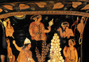

Foundation of Thebes
The Greek city of Thebes is located in Boeotia, to the northwest of Athens. We have already looked at the myth of Europa, whom Zeus abducts from the Near East in the form of bull and takes off to Crete. Thebes is founded by Europa’s brother, Cadmus, who is sent in search of his sister by his father. He went to Delphi to seek the advice of the oracle of Apollo which told him to forget about Europa but to follow a bull and, wherever it should lie down, to found a city. The cow lead him to Boeotia, where he founded Cadmeia which later became Thebes. When Cadmus arrives at the location of Thebes, however, he has to sacrifice the cow. In order to do so, he tries to draw water from a spring in the vicinity, but a snake of Ares guards the water. The snake kills many of Cadmus’ men, but Cadmus eventually defeats the beast (see image 1). Athena advises him to sow the teeth of the serpent into the ground. When he does so, armed men (called Spartoi) grow up out of the earth and fight each other until only 5 are left. From these, the myth says, were descended the Thebans. Cadmus is eventually given Harmonia, the daughter of Ares and Aphrodite as a bride. Cadmus and Harmonia have four daughters - Ino, Semele, Agave and Autonoe.
{kind=link}
This myth links the origins of Thebes to the Near East, through its foundation by Cadmus, but also to native Greek soil, through the birth of Theban forefathers also from the soil, an allegory perhaps for historical immigration, strife, and cultural mixing. We have already seen that the killing of a snake is a motif in foundation myths, such as in the foundation of Delphi by Apollo, and we will encounter the motif of sowing teeth into the earth again in the journey of Jason and the Argonauts.